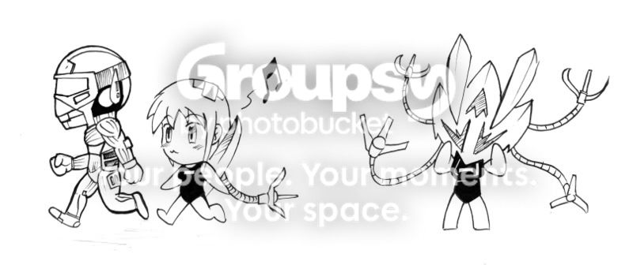
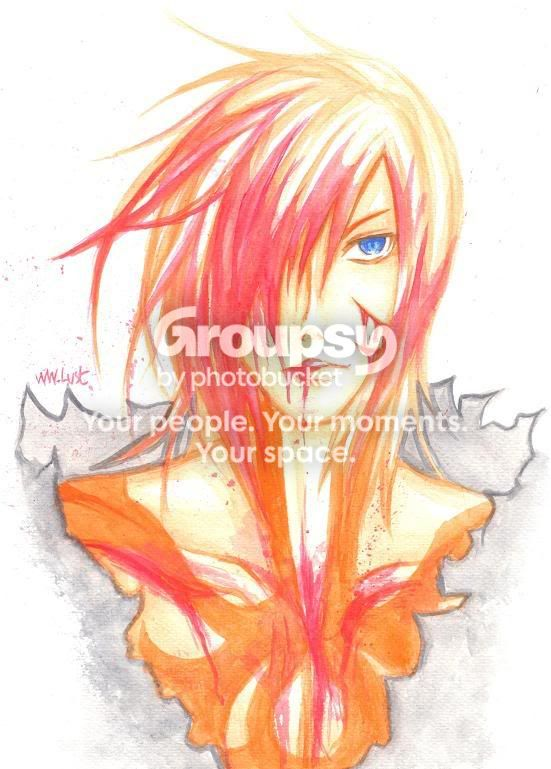
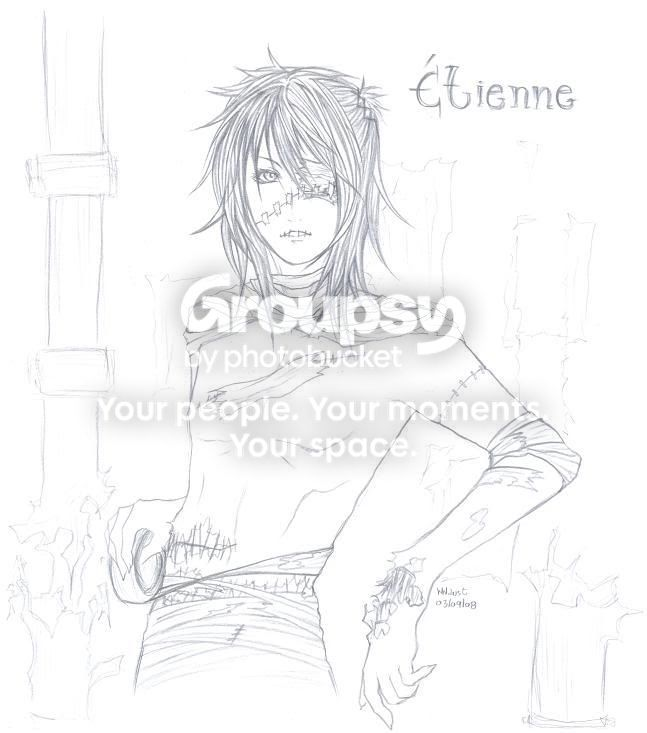

อัพงานโดจิน เล็กน้อย ( ยังไม่ได้ตกแต่ง )
เรื่อง cay = คลาย ... zip = ซิป เป็น cryzip คลายซิป ( ล้อ crysis )

เอเลี่ยนตัวน้อย พลังโลลิ


ทหารพ่อลูกติด โนแมน กับ เอเลี่ยนตัวน้อย
http://eco.froztic.in.th/archive/ecofanclub/
http://eco.froztic.in.th/archive/ecofanclub/viewtopic.php?f=21&t=1294




testice.jpg
r172.jpg
r173.jpg♦l<!!	 เขียน:ขอโทนะคับ ตามถึง โปรเเกรม oc 3.03E หน่อยครับ พอผมโหลด
เเล้วลอง ใช้งาน ดูครับ จามี serial key ขึ้นมาครับ ผม ลอง กด ปิดดู
ใช้งานได้ครับ ผมอยากถามว่า มันมีผลไยรึป่าว คับ
= =